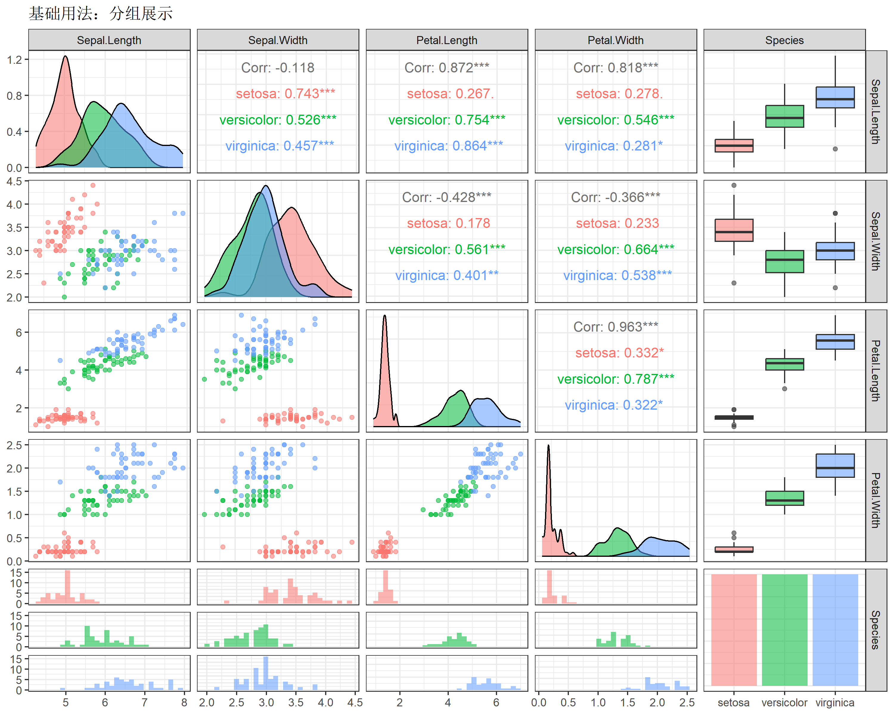
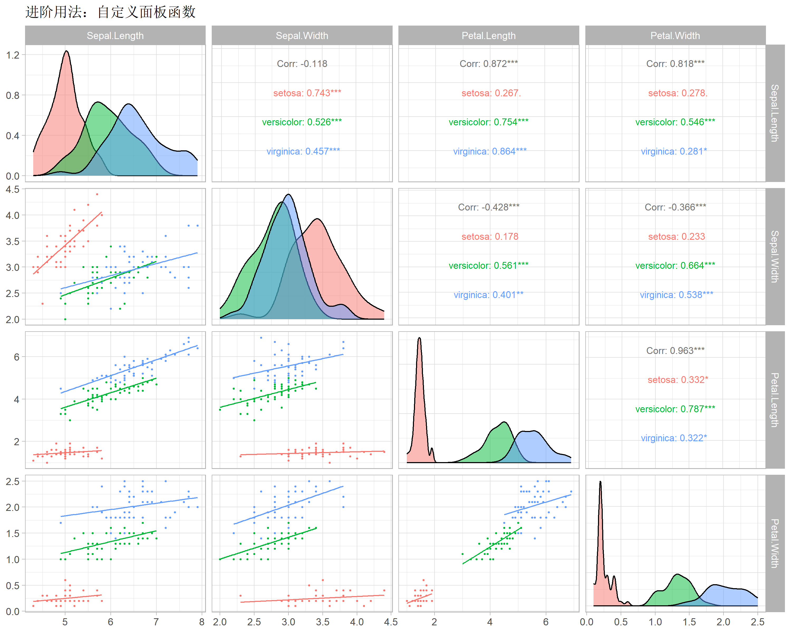
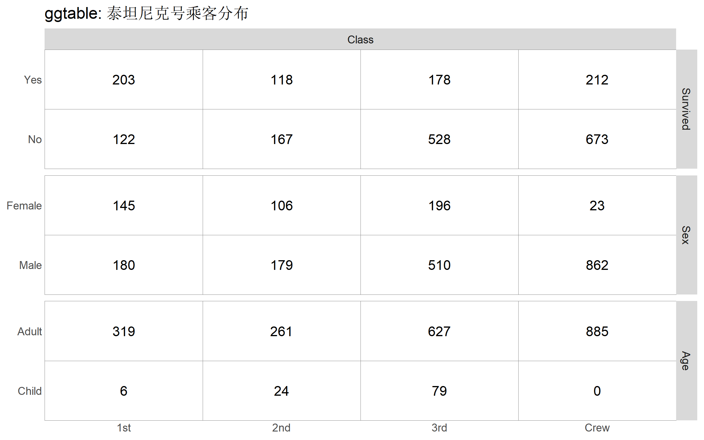
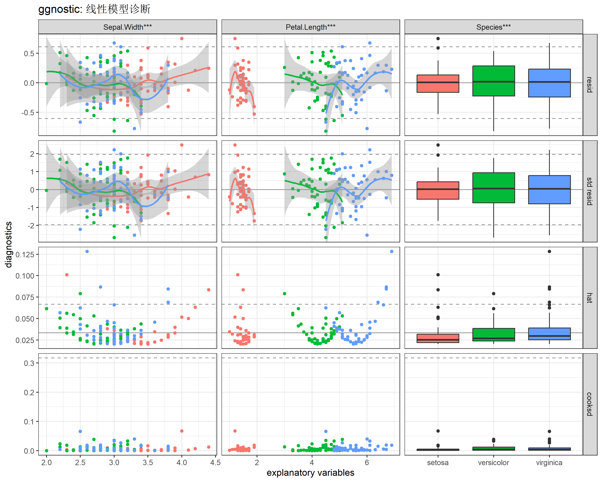
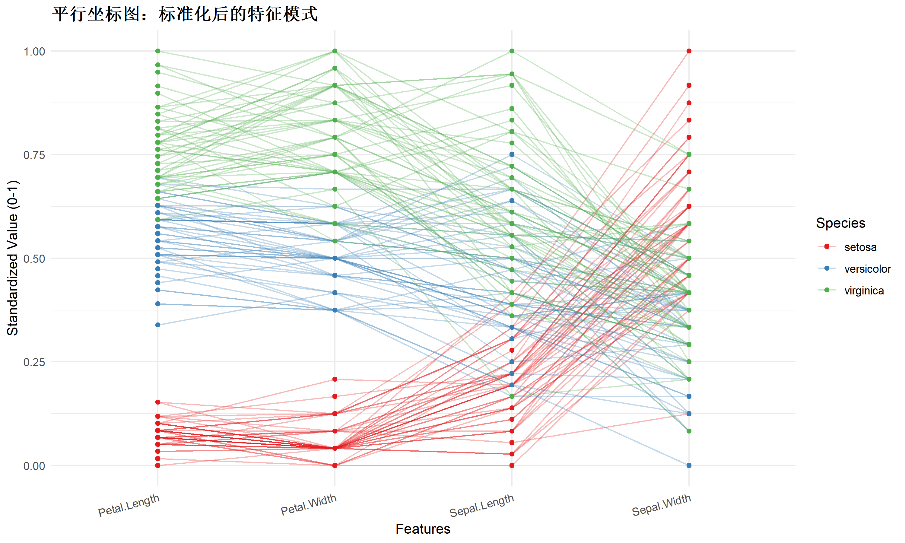

# 安装
if (!requireNamespace("GGally", quietly = TRUE)) {
install.packages("GGally", repos = "https://cloud.r-project.org")
}
if (!requireNamespace("broom.helpers", quietly = TRUE)) {
install.packages("broom.helpers", repos = "https://cloud.r-project.org")
}
# 加载
library(GGally)
library(ggplot2)GGally - 扩展 ggplot2 的可视化利器
R包
可视化
探索性分析
📦 R包简介
GGally 是 ggplot2 的扩展包，旨在通过添加几个函数来降低组合几何对象的复杂性。它最著名的功能是快速生成矩阵散点图、相关系数热图和平行坐标图，是探索性数据分析（EDA）的得力助手。
为什么选择它？
- 效率极高：一行代码即可查看数据集中所有变量的两两关系。
- 兼容性好：基于 ggplot2 构建，图表对象可以像 ggplot 一样添加图层和修改主题。
- 信息丰富：不仅展示图形，还自动计算并展示相关系数等统计量。
🛠 安装与加载
💡 核心功能详解
1. ggpairs()：矩阵散点图（完全指南）
ggpairs() 是 GGally 的旗舰函数。除了默认展示，它允许高度自定义每个区域（对角线、上三角、下三角）的展示形式。
基础用法与分组
最简单的用法是直接传入数据框，但通常我们需要指定列和分组变量。
# 使用 iris 数据集
data(iris)
ggpairs(iris,
columns = 1:5, # 包含数值和分类变量
aes(color = Species, # 分组着色
alpha = 0.5)) + # 透明度
theme_bw() +
labs(title = "基础用法：分组展示")
进阶定制：控制不同区域
你可以通过 upper, lower, diag 参数分别控制三个区域的绘图类型 (continuous, combo, discrete)。
# 自定义函数：创建更美观的散点图
my_scatter <- function(data, mapping, ...) {
ggplot(data = data, mapping = mapping) +
geom_point(..., size = 0.5) + # 缩小点的大小
geom_smooth(method = "lm", se = FALSE, size = 0.5) # 添加回归线
}
ggpairs(iris,
columns = 1:4,
aes(color = Species),
# 上三角：展示相关系数，字体大小设为 3
upper = list(continuous = wrap("cor", size = 3)),
# 下三角：使用自定义函数
lower = list(continuous = my_scatter),
# 对角线：使用密度图，透明度 0.5
diag = list(continuous = wrap("densityDiag", alpha = 0.5))
) +
theme_light() +
labs(title = "进阶用法：自定义面板函数")
2. ggbivariate()：双变量分析
官方文档将其标记为”主要绘图函数”之一。它用于展示一个结果变量 (Outcome) 与多个解释变量 (Explanatory) 之间的关系。这在建模前的 EDA 阶段非常高效。
# 以 tips 数据集为例 (需要 reshape2 或其他包提供，这里用 iris)
# 探索 Sepal.Length (数值型) 与其他变量的关系
ggbivariate(iris,
outcome = "Sepal.Length",
explanatory = c("Sepal.Width", "Petal.Length", "Species")) +
labs(title = "ggbivariate: 探索 Sepal.Length 的影响因素")
3. ggcorr()：相关性热图
专门用于可视化相关系数矩阵，支持无需计算 cor 直接传入原始数据。
ggcorr(iris[, 1:4],
method = c("everything", "pearson"), # 计算方法
label = TRUE, # 显示数值
label_size = 3, # 数值大小
label_round = 2, # 保留小数位
label_alpha = TRUE, # 数值透明度随相关性变化
nbreaks = 5, # 颜色分段数
palette = "RdBu", # 配色方案 (RColorBrewer)
layout.exp = 1) + # 扩充布局防止标签截断
labs(title = "精美相关性热图")
4. ggtable()：可视化交叉表
用于展示离散变量之间的分类汇总情况，类似于 table() 的图形化版本。
# 制造一些离散数据
df_tips <- as.data.frame(Titanic)
# 展开数据，因为 ggtable 默认每行是一个观测
df_tips_expanded <- df_tips[rep(row.names(df_tips), df_tips$Freq), 1:4]
ggtable(df_tips_expanded, "Class", c("Survived", "Sex", "Age"), cells = "observed") +
labs(title = "ggtable: 泰坦尼克号乘客分布")
5. ggduo()：双组变量关联
当你不想看所有变量的两两关系，而是想看 一组变量 (X) 与 另一组变量 (Y) 的关系时（类似典型相关分析的视角），ggduo() 非常有用。
# 比如：探索 萼片(Sepal) 尺寸 与 花瓣(Petal) 尺寸的关系
ggduo(iris,
columnsX = c("Sepal.Length", "Sepal.Width"),
columnsY = c("Petal.Length", "Petal.Width"),
aes(color = Species),
types = list(continuous = "smooth_lm")) + # 添加线性拟合
theme_bw() +
labs(title = "ggduo: 萼片 vs 花瓣")
6. ggnostic()：模型诊断矩阵
这是一个非常强大的功能，用于展示模型诊断信息。它生成一个矩阵，包含残差、杠杆值、Cook距离等统计量与解释变量的关系。
# 拟合一个简单模型 (使用 iris 数据以支持自动着色)
fit_iris <- lm(Sepal.Length ~ Sepal.Width + Petal.Length + Species, data = iris)
# 生成诊断矩阵
# 默认展示所有标准诊断指标 vs 解释变量
ggnostic(fit_iris,
columnsY = c(".resid", ".std.resid", ".hat", ".cooksd"), # 选定诊断指标
mapping = aes(color = Species)) +
theme_bw() +
labs(title = "ggnostic: 线性模型诊断")
7. ggcoef_model()：回归系数可视化
比基础的 summary(model) 更直观，特别适合在论文中展示模型结果。
# 建立两个回归模型
mod1 <- lm(Sepal.Length ~ Sepal.Width + Petal.Length, data = iris)
mod2 <- lm(Sepal.Length ~ Sepal.Width + Petal.Length + Petal.Width, data = iris)
# 对比模型
ggcoef_compare(list("Model A" = mod1, "Model B" = mod2),
variable_labels = c(
Sepal.Width = "萼片宽度",
Petal.Length = "花瓣长度",
Petal.Width = "花瓣宽度"
),
conf.level = 0.95) +
scale_color_brewer(palette = "Dark2") + # 使用更好看的配色
theme_minimal() +
labs(title = "回归模型系数对比",
caption = "注：误差棒表示 95% 置信区间")
📊 实战案例：高维数据探索
平行坐标图 (ggparcoord) 是展示多维数据（>3维）模式的利器，特别适合观察分类效果或异常值。
# 模拟一个稍复杂的数据处理场景
# 1. 选取数值列
# 2. 这里的 scale="globalminmax" 保留了原始数据的相对大小，或者用 "std" (默认) 看相对趋势
ggparcoord(iris,
columns = 1:4,
groupColumn = 5,
order = "anyClass", # 自动排序优化展示
showPoints = TRUE,
scale = "uniminmax", # 标准化到 0-1 之间，便于比较形状
alphaLines = 0.3) +
scale_color_brewer(palette = "Set1") +
theme_minimal() +
theme(
plot.title = element_text(size = 14, face = "bold"),
axis.text.x = element_text(angle = 15, hjust = 1)
) +
labs(title = "平行坐标图：标准化后的特征模式",
y = "Standardized Value (0-1)",
x = "Features")
📝 函数速查表
| 函数 | 功能描述 | 核心参数/技巧 |
|---|---|---|
ggpairs() |
矩阵散点图 (通用) | upper/lower/diag 控制面板内容 |
ggbivariate() |
双变量分析 (Outcome vs X) | outcome, explanatory 指定变量 |
ggcorr() |
相关性热图 | label = TRUE, nbreaks 颜色分段 |
ggtable() |
可视化交叉表 | cells = "observed" 显示数值 |
ggduo() |
双组变量矩阵 | columnsX, columnsY 两组对撞 |
ggnostic() |
模型诊断矩阵 | 支持 lm, glm 等模型对象 |
ggcoef_model() |
模型系数图 | include_intercept = FALSE |
ggparcoord() |
平行坐标图 | scale = "uniminmax" 归一化 |
🔗 参考资料
- 官方文档 (Pkgdown)：本文结构参考了官方文档的 Core Functionality 分类。
- Core Functionality: 包含所有高级绘图函数的列表。
- Vignette: ggpairs: 强烈推荐阅读，这是 GGally 最核心的功能。
- GitHub: https://github.com/ggobi/ggally